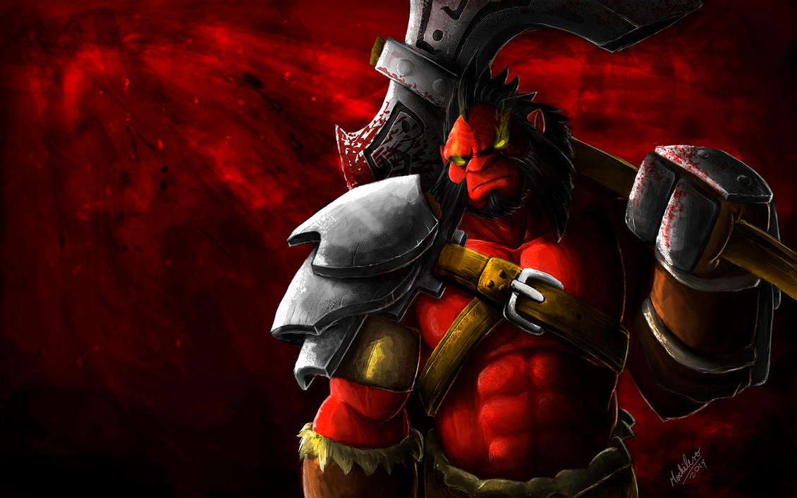
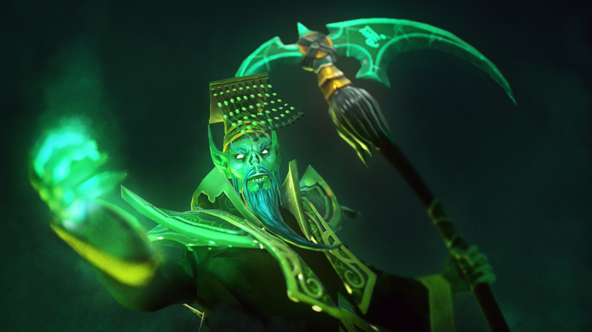

Doto 2 Heroes
-
Morphling
For dark eons the comet circled. Held in thrall to a distant sun, bound by gravity's inexorable pull, the massive ball of ice careened through the blackness between worlds, made strange by its dark journey. On the eve of the ancient war of the Vloy, it punched down through the sky and lit a glowing trail across the night, a sign both armies took for an omen. The frozen ball melted in a flash of boiling heat, as below two forces enjoined in battle across the border of a narrow river. Thus freed from its icy stasis, the Morphling was born into conflict, an elemental power at one with the tides of the ocean, capricious and unconstrained. He entered the fight, instinctively taking the form of the first general who dared set foot across the water, and then struck him dead. As the motley warriors clashed, he shifted from form to form throughout the battle, instantly absorbing the ways of these strange creatures--now a footsoldier, now an archer, now the cavalryman--until, by the time the last soldier fell, Morphling had played every part. The battle's end was his beginning.
Unique Ability: MORPH
Morphling changes his form to match the targeted enemy, gaining their basic abilities with reduced mana cost. Can be toggled for the duration of the ability.
-

Razor
Among the emblematic powers that populate the Underscape, Razor the Lightning Revenant is one of the most feared. With his whip of lightning, he patrols the Narrow Maze, that treacherous webwork of passages by which the souls of the dead are sorted according to their own innate intelligence, cunning and persistence. Drifting above the Maze, Razor looks down on the baffled souls below, and delivers jolts of scalding electricity that both punish and quicken the souls as they decide their own fates, hurrying on toward luminous exits or endlessly dark pits. Razor is the eternal embodiment of a dominating power, abstract and almost clinical in his application of power. Yet he has a lordly air that suggests he takes a sardonic satisfaction in his work.
Unique Ability: EYE OF THE STORM
A powerful lightning storm strikes out at enemy units with the lowest health, dealing damage and reducing their armor.
-

Axe
As a grunt in the Army of Red Mist, Mogul Khan set his sights on the rank of Red Mist General. In battle after battle he proved his worth through gory deed. His rise through the ranks was helped by the fact that he never hesitated to decapitate a superior. Through the seven year Campaign of the Thousand Tarns, he distinguished himself in glorious carnage, his star of fame shining ever brighter, while the number of comrades in arms steadily dwindled. On the night of ultimate victory, Axe declared himself the new Red Mist General, and took on the ultimate title of 'Axe.' But his troops now numbered zero. Of course, many had died in battle, but a significant number had also fallen to Axe's blade. Needless to say, most soldiers now shun his leadership. But this matters not a whit to Axe, who knows that a one-man army is by far the best.
Unique Ability: CULLING BLADE
Axe spots a weakness and strikes, instantly killing an enemy unit with low health, or dealing moderate damage otherwise. When an enemy hero is killed with Culling Blade, its cooldown is reset, and Axe and nearby allied units gain bonus movement speed.
-

Jakiro
Even among magical beasts, a twin-headed dragon is a freak. Equal parts ice and fire, cunning and rage, the creature known as Jakiro glides over charred and ice-bound battlefields, laying waste to any who would bear arms against it. Pyrexae dragon clutches always contain two fledglings. Famous for their viciousness even from the first moments of life, newly hatched dragons of this species will try to kill their sibling while still in the nest. Only the strongest survive. In this way is the strength of the Pyrexae line ensured. By some accident of nature, the freak Jakiro hatched from a single egg, combining in a single individual the full range of abilities found within the diverse Pyrexae species. Trapped within the armature of its monstrous body, the powers of ice and fire combine, and now no enemy is safe.
Unique Ability: MACROPYRE
Jakiro exhales a wide line of lasting flames, which deals damage per second to any enemy units caught in the fire.
-

Necrophos
In a time of great plague, an obscure monk of dark inclinations, one Rotund'jere, found himself promoted to the rank of Cardinal by the swift death of all his superiors. While others of the order went out to succor the ill, the newly ordained cardinal secluded himself within the Cathedral of Rumusque, busily scheming to acquire the property of dying nobles, promising them spiritual rewards if they signed over their terrestrial domains. As the plague receded to a few stubborn pockets, his behavior came to the attention of the greater order, which found him guilty of heresy and sentenced him to serve in the plague ward, ensorcelled with spells that would ensure him a slow and lingering illness. But they had not counted on his natural immunity. Rotund'jere caught the pox, but instead of dying, found it feeding his power, transforming him into a veritable plague-mage, a Pope of Pestilence. Proclaiming himself Necrophos, he travels the world, spreading plague wherever he goes, and growing in terrible power with every village his pestilential presence obliterates.
Unique Ability: REAPER'S SCYTHE
Stuns the target enemy hero, then deals damage based on how much life it is missing. Heroes killed by Reaper's Scythe will have 15 seconds added to their respawn timer. Any kill under this effect is credited to Necrophos.
-
Zeus
Lord of Heaven, father of gods, Zeus treats all the Heroes as if they are his rambunctious, rebellious children. After being caught unnumbered times in the midst of trysts with countless mortal women, his divine wife finally gave him an ultimatum: 'If you love mortals so much, go and become one. If you can prove yourself faithful, then return to me as my immortal husband. Otherwise, go and die among your creatures.' Zeus found her logic (and her magic) irrefutable, and agreed to her plan. He has been on his best behavior ever since, being somewhat fonder of immortality than he is of mortals. But to prove himself worthy of his eternal spouse, he must continue to pursue victory on the field of battle.
Unique Ability: THUNDERGOD'S WRATH
Strikes all enemy heroes with a bolt of lightning, no matter where they may be. Thundergod's Wrath also provides True Sight around each hero struck. If an enemy hero is invisible, it takes no damage, but the True Sight is still created at that hero's location.